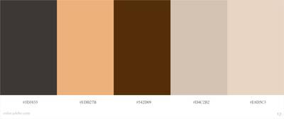
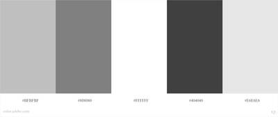

Color Scheme
The color scheme for the Tri-County News website utilizes a brown monochromatic scheme for the background colors and a gray for the fonts. The hex codes of the four colors are #542D09, #EDB27B, #E8D5C3, and #404040. I chose a brown monochromatic for two reasons. First, the color brown implies reliability. I would like the Tri-County News website to be perceived as a website that provides reliable, accurate information. Second, I wanted to try a monochromatic color scheme. I chose a gray for the font because it meets the accessibility standards and is not white or black.
